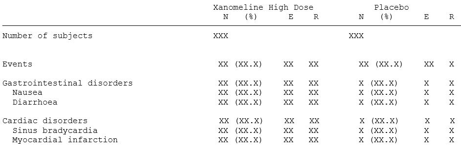

Endpoint Catalog
example_ep_spec.RmdThis vignette provides catalog of endpoint examples, derived endpoint specifications and associated ADaM functions and statistical functions.
The endpoints are grouped into three categories:
- Binary outcomes
- Demographics
- Continuous outcomes
Endpoint types
For the endpoints above, we note that the endpoint specification must
contain statistics both by strata and treatment arm (N,
n, %), by strata across treatment arms
(RR, OR, P-value) and across
strata and treatment arms (P-value interaction) which must
be calculated on two strata (Age, Sex). The
statistical functions will come from the library of statistical
functions in {chefStats}.
We assume the endpoint concerns adverse events and must be applied to
the full safety population set (SAFFL="Y").
We also need the functions to produce the clinical data to pass to
the data_prepare. Since this examlple analyses adverse
events, we will need some version of the ADAE dataset. As these exact
nature of the clinical dataset will differ from project-to-project,
there is no library of data prep functions we can source from. Instead
we define our own example functions here:
# Merge ADSL and ADAE from {pharmaverseadam}
mk_adae <- function(study_metadata) {
# Read ADSL
adsl <- data.table::as.data.table(pharmaverseadam::adsl)
# Filter treatment arms
adsl <- adsl[adsl$TRT01A %in% c("Placebo", "Xanomeline High Dose")]
# New derived ADSL age group variable
adsl[, AGEGR2 := data.table::fcase(AGE < 65, "AGE < 65",
AGE >= 65, "AGE >= 65",
default = NA
)]
# Read ADAE
adae <- data.table::as.data.table(pharmaverseadam::adae)
# Merge ADSL and ADAE
adam_out <-
merge(adsl, adae[, c(setdiff(names(adae), names(adsl)), "USUBJID"),
with =
F
], by = "USUBJID", all = TRUE)
return(adam_out)
}Let us consider different variations of this endpoint specification in the cases below. In the examples we demonstrate how to apply the statistics either on the full population, by grouping on system organ class (SOCs) and severity, and filtered on severity.
Note that the set of SOCs is trimmed according to an endpoint
criterion function (ep_crit_min_subev_by_trt), so that only
SOCs with at least 5 subjects with events in at least one treatment arm
are included. The criteria function will come from the library of
criteria functions found in {chefCriteria}.
Case 1: Adverse events (base form)
ep_spec <- chef::mk_endpoint_str(
data_prepare = mk_adae,
treatment_var = "TRT01A",
treatment_refval = "Xanomeline High Dose",
pop_var = "SAFFL",
pop_value = "Y",
stratify_by = list(c("AGEGR2", "SEX")),
stat_by_strata_by_trt = list(
chefStats::n_subj,
chefStats::n_subj_event,
cheStats::p_subj_event
),
stat_by_strata_across_trt = list(
chefStats::RR,
chefStats::OR,
chefStats::p_val
),
stat_across_strata_across_trt = list(chefStats::pval_interaction),
endpoint_label = "Adverse events - <treatment_var>"
)Case 2: Adverse events grouped by system organ class
ep_spec <- chef::mk_endpoint_str(
data_prepare = mk_adae,
treatment_var = "TRT01A",
treatment_refval = "Xanomeline High Dose",
pop_var = "SAFFL",
pop_value = "Y",
group_by = list(list(AESOC = c())),
stratify_by = list(c("AGEGR2", "SEX")),
stat_by_strata_by_trt = list(
chefStats::n_subj,
chefStats::n_subj_event,
cheStats::p_subj_event
),
stat_by_strata_across_trt = list(
chefStats::RR,
chefStats::OR,
chefStats::p_val
),
stat_across_strata_across_trt = list(chefStats::pval_interaction),
crit_endpoint = list(
c(
ep_crit_min_subev_by_trt,
min_n_subev = 5,
requirement_type = "any"
)
),
endpoint_label = "Adverse events - <AESOC> - <treatment_var>"
)Case 3: Mild adverse events grouped by system organ class
ep_spec <- chef::mk_endpoint_str(
data_prepare = mk_adae,
treatment_var = "TRT01A",
treatment_refval = "Xanomeline High Dose",
pop_var = "SAFFL",
pop_value = "Y",
endpoint_filter = 'ASEV == "MILD"',
group_by = list(list(AESOC = c())),
stratify_by = list(c("AGEGR2", "SEX")),
stat_by_strata_by_trt = list(
chefStats::n_subj,
chefStats::n_subj_event,
cheStats::p_subj_event
),
stat_by_strata_across_trt = list(
chefStats::RR,
chefStats::OR,
chefStats::p_val
),
stat_across_strata_across_trt = list(chefStats::pval_interaction),
crit_endpoint = list(
c(
ep_crit_min_subev_by_trt,
min_n_subev = 5,
requirement_type = "any"
)
),
endpoint_label = "Mild adverse events - <treatment_var>"
)Case 4: Adverse events grouped by severity and system organ class
ep_spec <- chef::mk_endpoint_str(
data_prepare = mk_adae,
treatment_var = "TRT01A",
treatment_refval = "Xanomeline High Dose",
pop_var = "SAFFL",
pop_value = "Y",
group_by = list(list(ASEV = c(), AESOC = c())),
stratify_by = list(c("AGEGR2", "SEX")),
stat_by_strata_by_trt = list(
chefStats::n_subj,
chefStats::n_subj_event,
cheStats::p_subj_event
),
stat_by_strata_across_trt = list(
chefStats::RR,
chefStats::OR,
chefStats::p_val
),
stat_across_strata_across_trt = list(chefStats::pval_interaction),
crit_endpoint = list(
c(
ep_crit_min_subev_by_trt,
min_n_subev = 5,
requirement_type = "any"
)
),
endpoint_label = "<ASEV> adverse events - <AESOC> - <treatment_var>"
)
To get results that match the table above, we can group the endpoints
by AESOC, and then within each AESOC grouping,
stratify by AEDECOD. By framing it as such, we can see that
we need a statistic (n number of subjects with an event and
E number of events) for every combination endpoint group
(AESOC) and stratification level (AEDECOD).
The statistical functions will come from chefStats.
We assume the endpoint concerns adverse events and must be applied to
the full safety population set (SAFFL="Y").
We also need the functions to produce the clinical data to pass to the data_prepare. Since this examlple analyses adverse events, we will need some version of the ADAE dataset. As these exact nature of the clinical dataset will differ from project-to-project, there is no library of data prep functions we can source from. Instead we define our own example functions here:
# Merge ADSL and ADAE from {pharmaverseadam}
mk_adae <- function(study_metadata) {
# Read ADSL
adsl <- data.table::as.data.table(pharmaverseadam::adsl)
# Filter treatment arms
adsl <- adsl[adsl$TRT01A %in% c("Placebo", "Xanomeline High Dose")]
# New derived ADSL age group variable
adsl[, AGEGR2 := data.table::fcase(AGE < 65, "AGE < 65",
AGE >= 65, "AGE >= 65",
default = NA
)]
# Read ADAE
adae <- data.table::as.data.table(pharmaverseadam::adae)
# Merge ADSL and ADAE
adam_out <-
merge(adsl, adae[, c(setdiff(names(adae), names(adsl)), "USUBJID"),
with =
F
], by = "USUBJID", all = TRUE)
return(adam_out)
}
ep_spec <- chef::mk_endpoint_str(
data_prepare = mk_adae,
pop_var = "SAFFL",
pop_value = "Y",
treatment_var = "TRT01A",
treatment_refval = "Xanomeline High Dose",
group_by = list(list(AESOC = c())),
stratify_by = list(c("AEDECOD")),
stat_by_strata_by_trt = list(chefStats::n_subj_event,
chefStats::n_event)
)
This table contains both continuous variables (Age,
Body Weight at Baseline) and categorical variables
(Age Group, Sex) for which different
statistics are applied. So the endpoint will be split up in two endpoint
specifications, one for the continuous variables (case 5), and one for
the categorical variables (case 6).
For the categorical variables (Age Group and
Sex), we see that we need a statistic for each
stratification level of the category (e.g. AGEGR1 < 65
and AGEGR1 >= 65). So it is clear that to get the
results we need, we need one statistic per stratification level and
treatment level. Thus we will supply our statistical function to the
stat_by_strata_by_trt argument of our endpoint
specification.
For the continuous variables it is less obvious. However, if we
consider TOTAL to be a stratification just like age or sex, albeit with
only a single level, then we can see that here we also need one
statistic per strata level and treatment level, so will use the
stat_by_strata_by_trt
In both cases a single statistical function is applied,
(chefStats::demographics_continuous() and
chefStats::demographics_categorical() respectively) which
compactly supplies all required statistics in one function call.
Alternatively, we can define separate functions for each statistics and
apply the individually in the endpoint specification.
We also need the functions to produce the clinical data to pass to
the data_prepare. Since this example analyzes body weight,
we will need some version of the ADVS dataset. As these exact nature of
the clinical dataset will differ from project-to-project, there is no
library of data prep functions we can source from. Instead we define our
own example that matches the needs of our analysis:
# Merge ADSL and ADVS from {pharmaverseadam}
mk_advs <- function(study_metadata) {
# Read ADSL
adsl <- data.table::as.data.table(pharmaverseadam::adsl)
# Filter treatment arms
adsl <- adsl[adsl$TRT01A %in% c("Placebo", "Xanomeline High Dose")]
# New derived ADSL age group variable
adsl[, AGEGR2 := data.table::fcase(AGE < 65, "AGE < 65",
AGE >= 65, "AGE >= 65",
default = NA
)]
# Read ADVS
advs <- data.table::as.data.table(pharmaverseadam::advs)
# Identify baseline body weight
advs_bw <- advs[advs$PARAMCD == "WEIGHT" & advs$VISIT == "BASELINE"]
# Create new variable BW_BASELINE
advs_bw[["BW_BASELINE"]] <- advs_bw[["AVAL"]]
# Merge ADSL, ADAE and baseline body weight from ADVS
adam_out <-
merge(adsl, advs_bw[, c("BW_BASELINE", "USUBJID")], by = "USUBJID", all.x = TRUE)
return(adam_out)
}We show how to define demographic endpoints for both continuous variables and categorical variables
Case 1: Baseline characteristics of analysis population (continuous variables)
chef::mk_endpoint_str(
data_prepare = mk_advs,
treatment_var = "TRT01A",
treatment_refval = "Xanomeline High Dose",
pop_var = "SAFFL",
pop_value = "Y",
stat_by_strata_by_trt = list(
c(demographics_continuous,
var = "AGE"
),
c(demographics_continuous,
var = "BW_BASELINE"
)
),
endpoint_label = "Demographics endpoint (categorical measures)"
)Case 2: Baseline characteristics of analysis population (categorical variables)
chef::mk_endpoint_str(
data_prepare = mk_advs,
treatment_var = "TRT01A",
treatment_refval = "Xanomeline High Dose",
pop_var = "SAFFL",
pop_value = "Y",
stratify_by = list(c("AGEGR2", "SEX")),
stat_by_strata_by_trt = list(c(demographics_counts)),
endpoint_label = "Demographics endpoint (categorical measures)"
)We then collect the two endpoint specifications to cover the complete endpoint:
ep_spec <- rbind(ep_spec_pt1, ep_spec_pt2)
The table above contains statistics on baseline characteristics, as
well as change-from-baseline. We observe that mean and SD are calculated
on each combination of treatment arm, strata (total and age), time
(baseline, week 8 and 16). By defining time (AVISIT) as the
endpoint grouping we can obtain all the statistics in one endpoint
specification. This implies that:
- The mean and SD are calculated by treatment and strata levels
(
stat_by_strata_by_trt) on both the analysis data columns containing the baseline (VALUE_BASELINE) and change from baseline column (VALUE_CHANGE). - Number of subjects (
N) is also calculated by treatment and strata level (stat_by_strata_by_trt). - For each endpoint grouping (
AVISIT) Hedge’s G is calculated by each strata level and across treatment arms (stat_by_strata_across_trt).
We also need the functions to produce the clinical data to pass to
the data_prepare. Since this example analyses laboratory
data, we will need some version of the ADLB dataset. As these exact
nature of the clinical dataset will differ from project-to-project,
there is no library of data prep functions we can source from. Instead
we define our own example that matches the needs of our analysis:
# Merge ADSL and ADLB from {pharmaverseadam}
mk_adlb <- function(study_metadata) {
# Read ADSL
adsl <- data.table::as.data.table(pharmaverseadam::adsl)
# Filter treatment arms
adsl <-
adsl[adsl$TRT01A %in% c("Placebo", "Xanomeline High Dose")]
# New derived ADSL age group variable
adsl[, AGEGR2 := data.table::fcase(AGE < 65, "AGE < 65",
AGE >= 65, "AGE >= 65",
default = NA
)]
# Read ADLB
adlb_0 <- data.table::as.data.table(pharmaverseadam::adlb)
adlb_1 <- adlb_0[adlb_0[["PARAMCD"]] == "SODIUM" &
adlb_0[["AVISIT"]] %in% c("Baseline", "Week 8", "Week 16"), ]
adlb2 <-
merge(adlb_1,
adlb_1[adlb_1$AVISIT == "Baseline", c("USUBJID", "AVAL")],
by = "USUBJID", all.x = TRUE
)
adlb2[["VALUE_BASELINE"]] <- adlb2[["AVAL.y"]]
adlb2[["VALUE_CHANGE"]] <- adlb2[["AVAL.x"]] - adlb2[["AVAL.y"]]
# Merge ADSL and ADLB
adam_out <-
merge(adsl, adlb2[, c(
"USUBJID",
"PARAMCD",
"AVISIT",
"VALUE_BASELINE",
"VALUE_CHANGE",
"ANL01FL"
)], by = "USUBJID", all.x = TRUE)
return(adam_out)
}The endpoint specification showing “summary statistics on baseline and change from baseline” is shown below
chef::mk_endpoint_str(
data_prepare = mk_adlb,
treatment_var = "TRT01A",
treatment_refval = "Xanomeline High Dose",
pop_value = "Y",
group_by = list(list(AVISIT = c())),
stratify_by = list(c("AGEGR2")),
stat_by_strata_by_trt = list(
"n_sub" = chefStats::n_subj,
"mean: VALUE_BASELINE" = c(chefStats::mean_value, var = "VALUE_BASELINE"),
"mean: VALUE_CHANGE" = c(chefStats::mean_value, var = "VALUE_CHANGE"),
"sd: VALUE_BASELINE" = c(chefStats::sd_value, var = "VALUE_BASELINE"),
"sd: VALUE_CHANGE" = c(chefStats::sd_value, var = "VALUE_CHANGE")
),
stat_by_strata_across_trt = list(hedgesg),
endpoint_label = "Baseline and change from baseline on SODIUM - <AVISIT>"
)